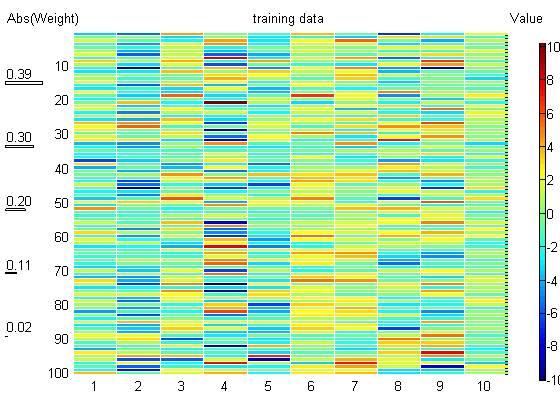
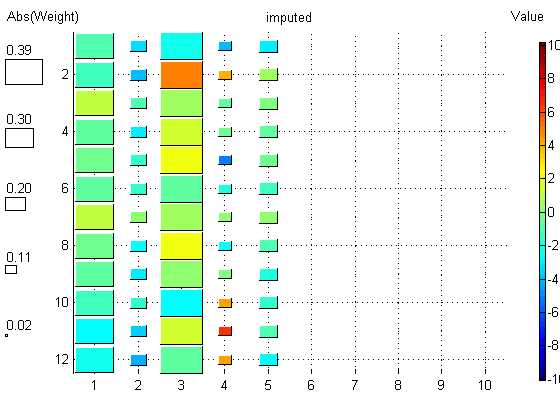
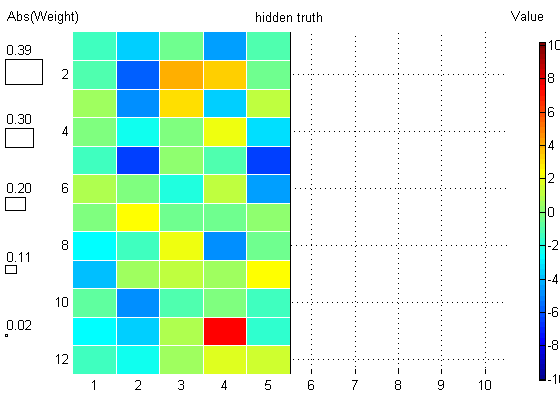

Gauss Imputation Demo
function gaussImputationDemoOld()
setSeed(0);
d = 10;
mu = randn(d,1); Sigma = randpd(d);
pcMissing = 0.5;
[XfullTrain, XmissTrain] = mkData(mu, Sigma, 100, true, pcMissing);
[Xfull, Xmiss, Xhid] = mkData(mu, Sigma, 12, false, pcMissing);
for useFull = [true]
if useFull
model = gaussMissingFitEm(XfullTrain, 'verbose', false);
muHat = model.mu;
SigmaHat = model.Sigma;
assert(approxeq(rowvec(muHat), mean(XfullTrain)))
assert(approxeq(SigmaHat, cov(XfullTrain,1)))
[Ximpute, V] = gaussImpute(model, Xmiss);
Xtrain = XfullTrain;
fname = 'mvnImputeFull';
else
[model, LLtrace] = gaussMissingFitEm(XmissTrain, 'verbose', false);
figure; plot(LLtrace); title('EM loglik vs iteration')
[Ximpute, V] = gaussImpute(model, Xmiss);
Xtrain = XmissTrain;
fname = 'mvnImputeEm';
end
conf = 1./V;
conf(isinf(conf))=0;
figure;
hintonScaleMulti({Xtrain}, {'map', 'jet', 'title', 'training data'}, ...
{Xmiss}, {'map', 'Jet', 'title', 'observed'}, ...
{Ximpute, conf}, {'title', 'imputed'}, ...
{Xhid}, {'title', 'hidden truth'});
printPmtkFigure(fname);
end
end
function [Xfull, Xmiss, Xhid, missing] = mkData(mu, Sigma, n, rnd, pcMissing)
d = length(mu);
model = struct('mu', mu, 'Sigma', Sigma);
Xfull = gaussSample(model, n);
if rnd
missing = rand(n,d) < pcMissing;
else
missing = false(n,d);
missing(:, 1:floor(pcMissing*d)) = true;
end
Xmiss = Xfull;
Xmiss(missing) = NaN;
Xhid = Xfull;
Xhid(~missing) = NaN;
end


 